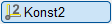
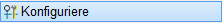
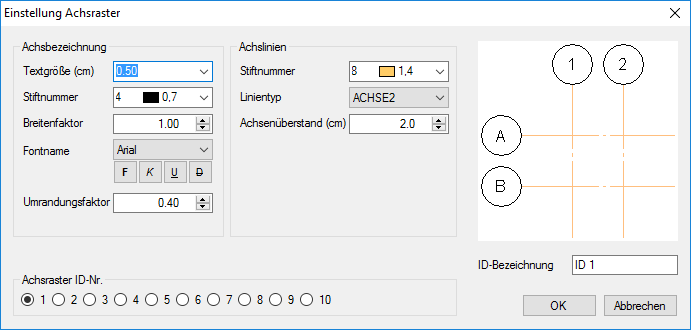
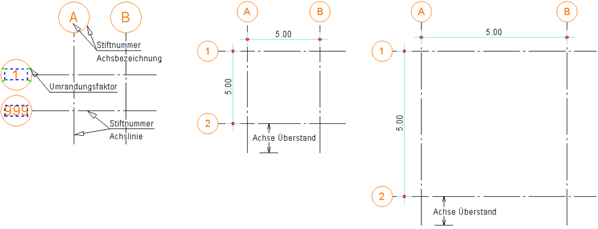

 
Konfiguration und Benennung wiederverwendbarer Achsraster-Stile.
Die Achsraster-Stile können über die Achsraster-Stilauswahl (im Funktionsbereich) aufgerufen werden. Sie haben originär die ID-Bezeichnung ID 1 bis ID 10.
So wird's gemacht:
§Wählen Sie im Dialog Einstellung Achsraster unter Achsraster ID-Nr. das Achsraster, das Sie bearbeiten wollen.
Die Darstellung des gewählten Achsrasters wird als Vorschau angezeigt.
§Geben Sie unter ID-Bezeichnung einen möglichst treffenden Namen für das Achsraster an. Dieser Name wird in der Achsraster-Auswahl (im Funktionsbereich) verwendet.
Die Achsraster-Stile (Achsraster ID- Nr.) 1 bis 10 haben originär die ID-Bezeichnung ID 1 bis ID 10.
§Ändern Sie die gewünschten Einstellungen. Die Vorschau unterstützt Sie bei der Auswahl der Parameter.
§Um einen weiteren Achsraster-Stil zu definieren oder zu bearbeiten, wählen Sie eine andere Achsraster ID-Nr. aus.
§Klicken Sie auf OK, um die Einstellungen zu übernehmen.
Die neu definierten Achsraster-Stile können in der Achsraster-Stilauswahl (im Funktionsbereich) aufgerufen werden.
Optionen im Dialog "Einstellung Achsraster"
 |

Achsbezeichnung
Textgröße, Stiftnummer, Breitenfaktor, Fontname Wählen Sie die geeigneten Parameter für die Beschriftung der Achsen aus. Die Textattribute sind nur bei Windows-TrueType-Schriften möglich. Der Stift, mit dem der Text geschrieben wird, wird auch für die Umrandung benutzt! Umrandungsfaktor Um die Zahl (mind. dreistellig) wird ein Rechteck gelegt. Um dieses Rechteck wird die Umrandung mit dem eingestellten Abstand (= Textgröße * Faktor) gezeichnet. Siehe Skizze. |
Achslinien
Stiftnummer Auswahl des Stiftes. Linientyp Auswahl des Linientyps. Achsenüberstand Dieses Maß wird ohne Berücksichtigung eines Maßstabes auf die Zeichnung übertragen. |
Vorschau
Hier können Sie jede Änderung der Parameter optisch verfolgen.
Achsraster ID-Nr.
Sie können zehn verschiedene Konfigurationen definieren.
Klicken Sie dazu die ID-Nummer an, deren Parameter Sie bearbeiten möchten.
ID-Bezeichnung
Bezeichnung des Achsraster-Stils. Wird in der Ausklappliste der Achsraster-Stilauswahl angezeigt.
Zugehörige Referenzen: